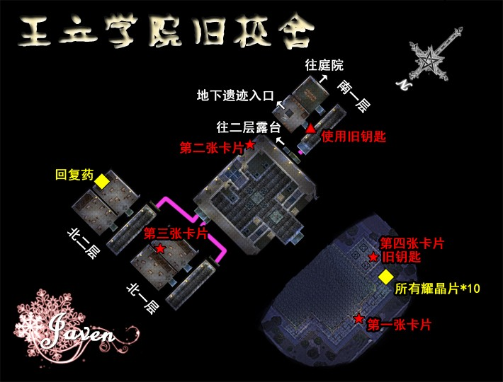
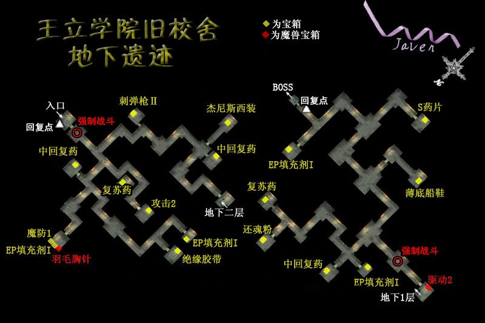

第一章 潜行的白影
王都·选择队友开始新的冒险
王都格兰赛尔游击士协会内，选择接下来的行动伙伴：阿加特或雪拉，这个选择会影响到今后数章的战斗人员和很多剧情对话，新手玩家以及对魔法与AT理论理解不深的玩家建议选择阿加特。
去飞艇坪售票处拿机票，与接待员对话交出机票出发。飞行船上跟所有人对话后再切换一次场景即可继续剧情。注意，今后大多数章节结束时都是这个流程——与飞艇坪接待员对话-选择“办理乘船手续”-在飞艇上与所有队友（注意，是队友，只有第一章要求跟所有NPC对话，今后只需要跟全体队友对话即可。）对话完毕后切换场景时就会触发飞艇到站的剧情，今后不再赘述。这次在飞艇顶层会得到钓公师团的罗伊德大叔赠送的钓鱼手册和钓竿。
到达卢安。到达卢安的协会，先看看公告板上的支线。然后先在卢安到处转转，买些装备，开结晶孔、合成些回路、买新料理。银耳环和羽毛胸针可以在游戏吧换另外杂货店还有猫之套装，属性不算很好，可以作为收藏买一件。
{kind=link}
{kind=link}
{kind=link}
{kind=link}
{kind=link}
{kind=link}
此时开始有支线任务了，本攻略将按照最短跑路流程介绍攻略过程，所以只需要按顺序阅读即可。注意很多支线需要现在游击士协会的公告牌上看过之后才能做（通缉魔兽等部分支线以及隐藏支线不必看公告牌），所以如果到了任务触发地没能触发任务的话建议先确认一下自己有没有在游击士协会公告牌上面看了任务= =
☆卢安市区有以下料理：南街区亚克罗萨船员酒吧（海风通心汤粉、烤制鲑鱼腩）；北街区游戏吧拉旺塔尔（亚瑟利亚之吻）☆
◆主线任务 卢安支部的求援◆ （白影的调查）（BP：5+3，5000mira）完成之后游击士等级升到G+级，获得奖励饰品-银制挂坠（Def+15，免疫毒状态）
★先去北区的赌馆用筹码换【牌技师杰克 第二卷】和钓鱼竿-海风之星，也可以稍微学一下玩牌的方法，不过记住小赌怡情，大赌伤身★赌馆规则：在二楼与女招待对话购买筹码（5米拉换一个筹码，筹码不能赎回）。建议玩梭哈，这个胜率比较高。
接着去布朗西酒店1层房间接一下绀碧之塔的照片拍摄任务委托，这个任务稍后朵洛希作为NPC加入后再去完成才可以完美BP。
要调查三个相关人员。先去南区，路上会遇到钓公师团的罗伊德大叔，他会给你五个海参，钓鱼系统开启，今后可以通过钓鱼获得宝贵的耀晶片。接着继续去南区东侧的仓库，发生剧情战，此战注意敌方HP较低时会发动带几率一击必杀效果的“蚀杀一击”，注意在此之前杀死敌人即可。战斗后去南出口附近的住宅找贝尔夫。从南出口出发去艾尔·雷登关所，到达关所后在尽头的房间与哈恩队长对话——与2楼瀑布前的士兵尼克斯对话——下楼发生剧情。调查完毕之后回到卢安，最好在武器店买1个银耳环，稍后的作战会用到。
☆料理收集：艾尔•雷登关所食堂（盐釜甲壳烧）☆
从北出口出发去孤儿院，接着去玛诺利亚村的风车那里接孩子们，回到孤儿院后凯文神父加入队伍。此时凯文的魔法和物理能力都不错，利用这个机会带着他打几个通缉魔兽。这时候可以探索梅威海道，海道边沙滩上的骑士甲壳可以刷几个回避2的回路。别忘了去街景林道转转，这里的獾猪三连星和渡渡鸟会随机携带魔兽熊猫，有一定几率刷到小艾目前最强的武器晾衣杆。
☆玛诺利亚村有以下料理：白之木莲亭（魅惑海鲜烧串、海味鲜珍『泡』、味噌炖鱼）☆
●第一章支线任务①● 收集食材 （BP：2 + 1，1500+1000mira）奖品：20个魔兽羽翼
委托人在玛诺利亚村木莲亭旅馆二层一个房间。需要收集以下六种食材：魔兽鱼卵、魔兽之牙、魔兽鸟肉、魔兽鸟卵、魔兽之角和魔兽之骨，以下地点可以打到：魔兽鱼卵 (梅威海道上) 、魔兽之牙(街景林道&阿伊纳斯街道的大野猪) 、魔兽鸟肉&魔兽鸟蛋 (街景林道&阿伊纳斯街道的大鸟）、魔兽之角和魔兽之骨（绀碧之塔之后会反射物理攻击的盔甲巨蟹和一种海马），找到四种即可交任务，找全6种BP额外加1。现在不着急，稍后再做即可。
●第一章支线任务②● 梅威海道的通缉魔兽 （BP:3，2500mira）
敌人物理防御力很强，如果带阿加特的话可以给他堆防御力，推到队伍最前方吸引敌方攻击，小艾和凯文一直在后方用魔法攻击即可。
●第一章支线任务③● 街景林道的通缉魔兽 (BP:2 ，1500mira)
注意带银耳环防毒即可，难度不大。
回到卢安，凯文离队。注意轨迹系列游戏的传统：队员长期离队时自己的专属武器会带走，其余的防具、回路、饰品都会留给玩家，此时如果真缺钱的话可以把凯文的弓卸下之后再进入卢安，凯文离队后把这个弓卖掉。放心，等凯文下次归队时会带着更好的装备的。
三个目击者的口述都收集好了，回游击士协会报告。之后会有段很搞笑的剧情，对话选项“白影离开的方向” BP+3 ，奥利维尔入队。
公告板上又出来了很多支线任务，注意很多支线在主线进行到王立学院之后就过期了，所以先把这些支线都解决了再去王立学院。
●第一章支线任务④● 主日学校的讲师 （BP：2+2，1000+1000mira）
去教堂与芙丽达修女对话开始讲课，答案顺序为：②①③③②②③②②③（全对BP+2）
接着从南出口出发做一些支线：
●第一章支线任务⑤● 阿伊纳街道的通缉魔兽（BP：3，3000mira）
魔防很高，物理攻击效果更好。攻击时随机附加气绝状态，注意战前要装上羽毛胸针。注意怪物临死前会给其他的魔兽加攻击和速度，保护朵洛希别让她挂了。
打完通缉魔兽之后去SC的第一个塔——绀碧之塔
{kind=link}
进塔之后注意这里有会反射物理攻击的盔甲巨蟹，还有一种海马，这两个魔兽会掉落后面的支线任务需要的魔兽之角和魔兽之骨，走到五楼之后注意确认一下这两种都有至少一个，免得以后跑回头路。
●第一章支线任务⑥● 绀碧之塔的照片拍摄 (BP：1 + 2，2000+1000mira)
到达塔顶后稍微往后移动一点，接着在道具栏里面选择使用导力照相机，依次选择“从这里拍摄”，“拜托朵洛希”。如果宝箱、支线用的食材全部收集齐后选择“马上返回卢安”可以少跑些路。去酒店房间找森特交任务，得到奖励饰品-月亮眼镜。
从卢安北口出发，确认一下支线任务①需要的食材都收集好了就去玛诺利亚村交一下任务吧。接着去灯塔帮个忙（隐藏任务）。
●第一章支线任务⑦●（隐藏任务）灯塔的试运转 （BP：2+1，1500mira）
与塔顶的弗科特老人对话选择“有什么事情吗”即可触发该隐藏任务——到书架上看书熟悉启动操作方法
1. 水平翼和导力压设为LOW
2. 导力器启动开关设定为ON
3. 设定导力压为MID
4. 水平翼设定为MID
5. 设定导力压为HIGH
6. 水平翼设定为HIGH
7. 结晶回路连接设定为ON 即可完成，完成后奖励海参、虾米分别5个
临走之前问爷爷：“还有其他事吗?”（BP+1）
从灯塔出来后去古罗尼山道打通缉魔兽，这时在玛诺利亚间道的卷尾蟾可刷到EP2，古罗尼山顶关所内的回复点可以免费回复。
●第一章支线任务⑧● 古罗尼峰的通缉魔兽 （BP：2，2000mira）
这个也有毒，带上银耳环很轻松。
支线任务都做完了，回卢安报告一下，如果之前任务都完美完成，此时游击士等级会升到F级，获得奖励回路-吸收（打倒敌人时回复自身2%HP）。再去整理一下装备和回路就出发去王立学院吧，注意进入学院后一直到本章结束不能回卢安，装备回路只能现在整理。
进入学院后剧情，科洛丝入队。在资料室和汉斯回忆约修亚。在礼堂的舞台上与科洛丝聊天。在以下地点调查：主楼1层人文系教室的米克，2层的巴托姆、女生宿舍2层的芙拉瑟和蕾娜。
☆王立学院社团大楼一层学生食堂有以下料理：大小姐料理、热乎乎炸芋头、王室冰淇淋☆
调查完回社团大楼二层学生会办公室。出发去旧校舍，在门口发现怪盗的卡片。按照以下提示顺序调查：中间楼梯上去右手边灭掉的灯座、左边1层第一个教室内朝南摆得很整齐的课桌、右边2层小庭院倒下的花坛，得到古老的钥匙。打开1层右边走廊锁着的门，调查龙的石像发现进入地下的楼梯。进入之后很快进入剧情战，敌方的吸血攻击很恐怖，注意保护朵洛希。

战斗后朵洛希留下，四人继续前进，旁边有一个导力恢复装置，缺HP和EP的可以回来回复。此后的小怪、宝箱怪都不太好打，注意安全，另外如果之前有认真收集宝箱的话，此时奥利维尔的魔法攻击力是全队最高的，用他配出一些范围魔法攻击敌人效果很好。

迷宫的终点是第一章BOSS战，科洛丝做好回复，多用斗魂，奥利维尔用魔法攻击，小艾和另一名队员多用物理攻击，此战难度不大。
第一章主线到此结束。先把两个支线做完再出发。（注意，今后大多数章节都是如此，主线完成后会有几个小支线要做，之后再去飞艇坪前往下一个城市）
●第一章支线任务⑧● 选举事务所的伤人事件（隐藏任务） （BP 5，5000mira）
在布朗西酒店地下1层的房间内见到奈尔和朵洛希，然后上楼时发生剧情，选择“是”触发隐藏任务
1、地下1层，对楼梯边的贝尔夫询问“关于昆茨”得到线索“生气（发怒）
2、2楼对昆茨询问“关于昆茨”得到线索“响声”，询问“发怒”得到线索“关于海利欧
3、1楼询问柜台里的亚内斯特所有已获得的线索，准备下楼时阿加特、雪拉扎德、奥利维尔走下来发生剧情
4、再次询问亚内斯特“关于海利欧”得到线索“午餐”
5、去地下1层旅馆外询问穆拉德老人“午饭”得到线索“钟声”，然后询问“响声”再询问“钟声”
6、1楼询问亚内斯特“钟声”得到线索“收拾善后”
7、询问2楼所有人“午饭”、“钟声”、“收拾善后”
8、地下1层询问贝尔夫“午饭”、“收拾善后”
9、询问穆拉德老人“善后处理”“午饭”得知贝尔夫那时不在地下1楼
10、再询问贝尔夫“收拾善后”获得线索“关于贝尔夫”，再询问“关于贝尔夫”
11、回1楼找队友报告，犯人选择“贝尔夫”，其他都选“游击士的直觉”以外的那个选项
●第一章支线任务⑨● 急聘牌技师 （BP 2，2000mira）
只要选错一次就会失败。依据队友是雪拉或是阿加特，选项略有不同。
雪拉在队伍中的时候：
第一战：只留一对其余交换——比牌
第二战：两个选项都可以——投降
第三战：黑桃以外全部交换
阿加特在队伍中的时候：
第一战：两个选项都可以——比
第二战：两个选项都可以——投降
第三战：全部交换
两条线路结局相同，我方某人出老千获胜。
本章主线任务1 支线任务9 隐藏任务1 全BP值38 牌技师1本
此时完美BP 54 如果完美完成此时升到F+级，获得回路耀脉（少量增加敌人掉落的耀晶片数量）
================第一章 结束================